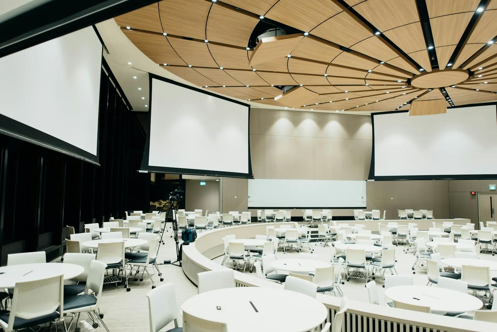

상장기업 자문 경험의 기업법무
계약서 한 줄부터수사 대응까지 함께합니다
거래 구조를 짜는 단계의 자문과 임직원 수사가 시작된 뒤의 방어는 따로가 아닙니다. 코스피·코스닥 상장기업을 자문해 온 대표변호사가 경영 판단의 법적 위험을 함께 살핍니다.
로펌 알엠 기업법무센터CORPORATE LEGAL CENTER
알엠 기업법무센터를 소개합니다
변환봉 대표변호사는 코스피·코스닥 상장기업의 법률자문과 M&A를 여러 건 수행했고, 노사관계 분쟁 자문과 특검 사건 변호도 맡아 왔습니다. 前 서울지방변호사회 사무총장을 지냈습니다. 자문 범위와 예상 비용은 착수 전에 서면으로 정리해 드리고, 수사·소송 기일과 서면 제출 같은 주요 단계는 담당자에게 바로 알려드립니다.

기업일반
계약 검토부터 주주 분쟁까지
국제법무·중재
중재조항 검토부터 판정 집행까지
경영법무컨설팅
정관 정비부터 내부 규정 점검까지
공정거래
조사 통지부터 과징금 불복까지
기업회생·파산·M&A
회생 신청부터 인가 전 M&A까지

금융·자본시장
금감원 조사부터 형사 절차까지
AI·데이터인텔리전스
AI 기본법부터 개인정보 처리까지
지식재산권
특허·상표·저작권 분쟁 대응

엔터테인먼트·스포츠
전속계약부터 선수 계약까지

의료·바이오·헬스케어
병원·제약·바이오 규제와 분쟁
방위산업
지체상금·제재 처분·기술보호

기업형사·화이트칼라범죄
횡령·배임·압수수색 대응
예방부터 사후 관리까지, 기업법무 4단계
사건의 단계마다 대표변호사가 직접 판단하고 움직입니다. 지금 어느 단계에 있는지부터 함께 확인합니다.
- 01
예방 자문
계약서·정관·주주간 약정을 검토하고, 공정거래·개인정보·AI 데이터 활용처럼 규제가 걸린 사업 구조를 미리 점검합니다.
- 02
거래·구조 설계
M&A, 투자 유치, 지분 양수도에서 실사 결과를 바탕으로 진술·보증 조항과 손해배상 범위를 협상해 계약에 반영합니다.
- 03
분쟁·수사 대응
횡령·배임 고소나 압수수색이 닥치면 대응 창구를 하나로 모으고, 임직원 조사 동행과 자료 제출 범위를 관리합니다.
- 04
사후 컴플라이언스
사건이 끝난 뒤 내부 규정과 결재 절차를 고쳐 같은 위험이 반복되지 않도록 하고, 임직원 교육 자료를 정리합니다.
상담은 이렇게 진행됩니다
 01
01상담 신청
전화·카카오톡·홈페이지로 신청하면 확인 즉시 상담 일정을 잡습니다.
 02
02변호사 직접 상담
사무장이 아닌 대표변호사가 사건을 처음부터 직접 듣고 방향을 제시합니다.
- 03
수임·진행 보고
수임 후 서면 작성과 출석을 직접 하고, 진행 상황을 단계마다 알려드립니다.
대표님·법무 담당자가 자주 묻는 질문
상담 전에 가장 많이 듣는 걱정에 먼저 답합니다
법무팀이 없는데 자문이 되나요?
됩니다. 사내 법무 인력이 없는 회사는 계약 검토와 분쟁 상담을 필요할 때마다 맡기거나, 월 단위 자문 계약으로 운영할 수 있습니다.
압수수색이 오면 어떻게 하죠?
먼저 영장 범위를 확인하십시오. 영장에 적힌 장소·물건만 압수할 수 있으므로, 변호인에게 바로 연락하고 참여권을 행사하는 것이 중요합니다.
가지급금도 횡령이 되나요?
경우에 따라 됩니다. 회계 처리와 상환 계획 없이 대표이사가 회사 자금을 쓰면 업무상횡령이 문제 될 수 있어 정리가 필요합니다.
M&A 실사는 무엇을 보나요?
숨은 부채와 소송 위험을 봅니다. 계약·인허가·노무·지식재산권 관계를 확인해 인수가격과 계약 조항에 반영할 사항을 찾아냅니다.
동업자와 지분 다툼이 생겼어요
정관과 주주간 약정부터 확인합니다. 의결권, 이사 선임, 지분 매수 조항에 따라 협상안과 가처분 등 법적 수단이 달라집니다.
AI 서비스에 고객 데이터를 써도 되나요?
동의 범위 안에서만 됩니다. 수집 목적과 다른 학습·분석에 쓰려면 가명처리나 추가 동의가 필요한지 개인정보 보호법 기준으로 따져야 합니다.
기업 자문은 어떤 방식으로 계약하나요?
두 가지가 있습니다. 건별로 계약 검토나 분쟁을 맡기는 방식과 월 단위로 상시 자문을 받는 방식이 있으며, 상담 때 회사 규모에 맞춰 범위와 비용을 서면으로 안내합니다.
임직원이 수사를 받으면 회사도 대응해야 하나요?
대부분 그렇습니다. 양벌규정으로 회사가 함께 처벌될 수 있는 범죄가 있고, 자료 제출과 진술이 회사 책임으로 번질 수 있어 함께 대응하는 편이 좋습니다.
노사 분쟁도 상담할 수 있나요?
할 수 있습니다. 대표변호사가 노사관계 분쟁 자문을 맡아 왔으며, 징계·해고와 단체교섭 문제를 회사 입장에서 검토해 드립니다.
상장사가 아니어도 M&A 자문을 받을 수 있나요?
받을 수 있습니다. 비상장 중소기업의 지분 인수나 사업 양수도도 실사와 계약 협상 구조는 같아서 규모에 맞게 범위를 조정해 진행합니다.
기업 업무사례
사건 유형별 진행 사례 (예시 문구)
대표이사 업무상배임 고소, 경영 판단 인정돼 불기소
투자 손실을 이유로 소수주주가 대표이사를 배임으로 고소했습니다. 이사회 의사록과 당시 검토 자료로 정상적인 경영 판단임을 소명해 불기소 처분을 받았습니다.
영장 범위를 넘은 압수물, 준항고로 일부 반환
수사기관이 혐의와 무관한 전자정보까지 가져간 사건이었습니다. 준항고를 제기해 범위를 벗어난 자료의 반환 결정을 받았습니다.
중소 제조사 지분 인수, 실사로 우발채무 조정
실사 과정에서 신고되지 않은 보증채무를 확인했습니다. 인수가격 조정과 특별 손해배상 조항을 넣어 거래를 마무리했습니다.
공동창업자 간 이사 선임 다툼, 가처분 인용
주주간 약정을 어긴 임시주주총회 결의가 문제였습니다. 결의 효력정지 가처분이 인용되어 경영권 분쟁이 협상으로 넘어갔습니다.
하도급 대금 지연 신고, 시정 뒤 경고로 종결
협력사가 대금 지급 지연을 이유로 신고한 사건이었습니다. 지연이자를 지급하고 지급 절차를 고쳐 경고 처분으로 끝났습니다.
직원 회삿돈 유용 사건, 피해 회복 후 선고유예
회계 담당 직원의 횡령을 확인해 고소하면서 회사 손해의 회수를 함께 진행했습니다. 피해가 대부분 회복되자 회사도 처벌불원서를 냈고 법원은 선고유예를 선고했습니다.
의뢰인 이야기
직접 상담하고 진행한 분들의 말 (예시 문구)

압수수색 당일 현장에 와주셨습니다
아침에 수사관들이 들이닥쳐 직원들이 크게 당황했습니다. 연락드리고 얼마 안 돼 변호사님이 오셔서 영장 범위를 확인해 주셨고, 이후 조사 일정도 차분히 정리됐습니다.

계약서에서 놓칠 뻔한 부분을 짚어주셨습니다
첫 인수라 상대방 초안을 그대로 쓰려 했습니다. 진술·보증 조항이 우리에게 불리하다는 설명을 듣고 협상해서 고쳤는데, 나중에 실제로 그 조항이 도움이 됐습니다.

작은 회사 사정도 잘 들어주셨습니다
법무팀이 없어 계약 하나에도 늘 불안했습니다. 비용 범위를 먼저 서면으로 주셔서 부담 없이 맡겼고, 급한 계약 검토도 빠르게 답을 주셔서 업무가 훨씬 편해졌습니다.

감정 싸움을 협상으로 바꿔주셨습니다
동업자와 말이 안 통하는 상황까지 갔습니다. 변호사님이 약정서를 근거로 할 수 있는 것과 없는 것을 정리해 주셔서, 소송보다 협상으로 지분 정리를 마칠 수 있었습니다.
방송·미디어

상담 문의
원하는 상담 방법을 선택하시면 대표변호사가 직접 확인하고 연락드립니다